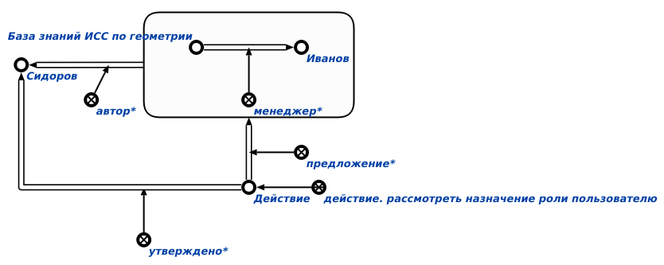

Задачей агента назначения роли пользователю является создание и утверждение* администратором* предложения* по назначению роли пользователю.
Данный агент инициируется при условии появления в памяти вопросной конструкции, соответствующей действию. назначить роль пользователю.
Первым аргументом запроса является знак пользователя, которому будет назначена роль. Вторым аргументом запроса является конкретная роль(администратор*, менеджер*, эксперт*), которая будет назначена пользователю. В случае задания третьего аргумента, данным аргументом дожлен являться знак проекта в рамках которого пользователю будет назначена роль.
Возможные результаты работы агента:
- Если пользователь, инициировавший выполнение агента, не является администратором*, то генерируется сообщение об ошибке ("Access denied. User must be a administrator.)."
- Если первый аргумент знака действия. назначить роль пользователю не является знаком пользователя, то генерируется сообщение об ошибке (Wrong second first argument. It must be a user.).
- В случае успешного выполнения агента будет сгенерирован знак действия. рассмотреть назначение роли пользователя, для которого пользователь, инициировавший действие станет автором. Будет сгенерирована связка отношения предложения, связывающая структуру, в рамках которой будет создана связка отношения, которое было передано как второй аргумент, связывающая пользователь и проект, и сгенерированный знак действия. рассмотреть назначение роли пользователя. Действие. рассмотреть назначение роли пользователя добавляется в историю развития компьютерной системы. Структура добавляется в предметную часть базы знаний .
- Если третьим аргументом был подан знак проекта, будет сгенерирована связка отношения роли ( администратор*, менеджер*, эксперт*), которая бюдет связывать знак пользователя и знак данного проекта.
- Если третьим аргументом не был подан знак проекта, будет сгенерирована связка отношения соотвествующей роли (администратор*, менеджер*, эксперт*), которая бюдет связывать знак пользователя и знак проекта администратора, инициировавшего агент.
